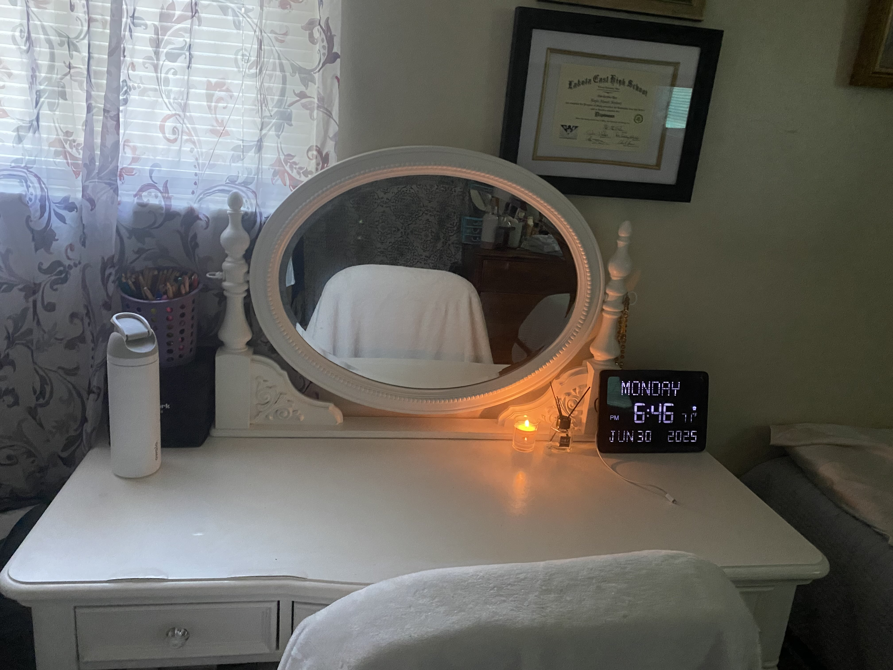

A quiet corner of the internet where emotional clarity meets technical growth.

I’m Layla Shalash, a student at the University of Cincinnati blending tech skills with emotional insight. This site is where I document my growth, share my projects, and reflect on the systems and stories that shape me.